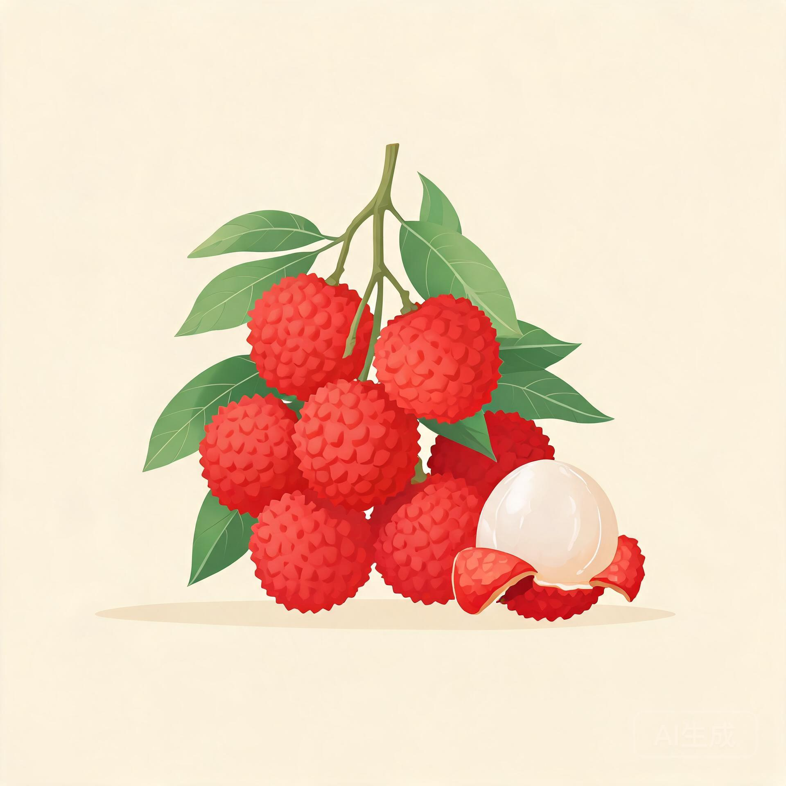
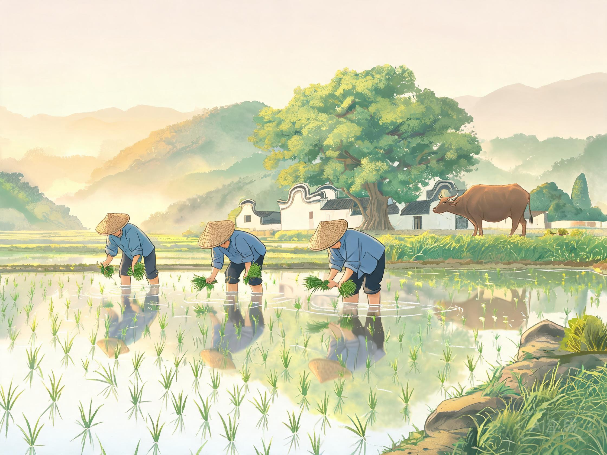
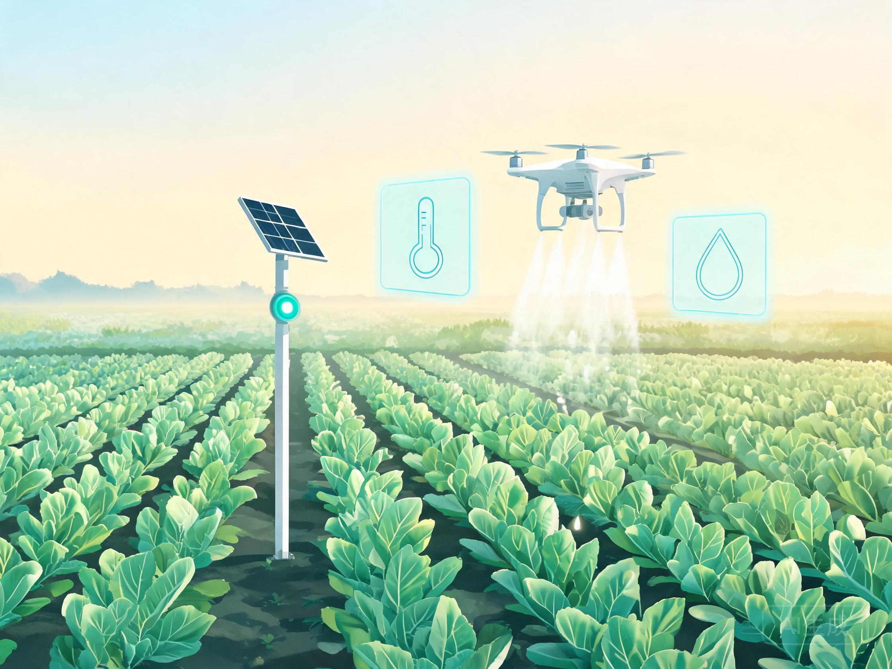
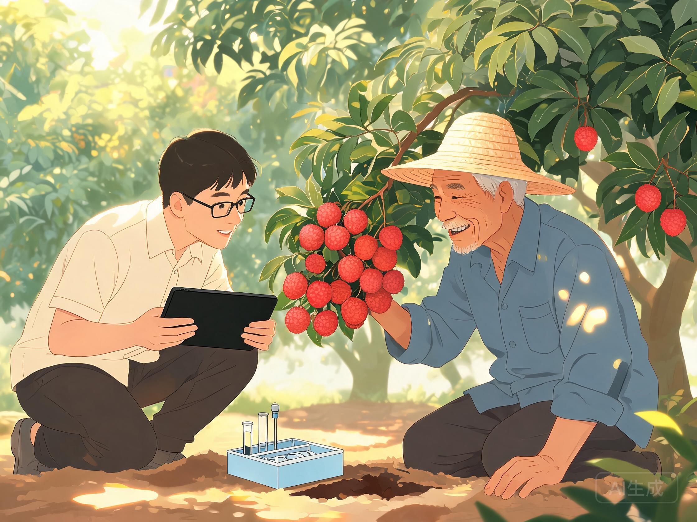
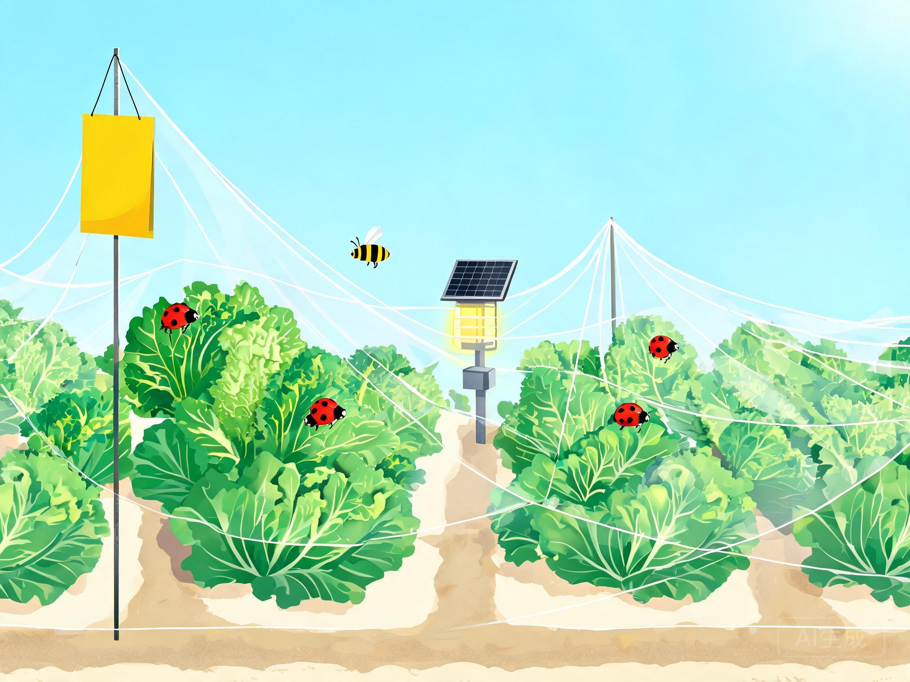

一张地图，看清广东"土特产"长在哪
广东人讲"不时不食"：荔枝、菠萝、单丛茶、丝苗米，每样物产都有自己的地盘。点开地图上的九个圆点，看它们具体产自哪里，又靠什么本事卖到全国。
轮廓为示意，不作划界依据 · 点圆点看特产（键盘也能操作）

茂名 · 荔枝
种地也开始看数据了
土里埋传感器，天上飞无人机，人在手机上就知道田里缺不缺水、生没生虫。下面三个小装置都能上手玩——数字是模拟的，背后的道理是真的。
装置一 · 一块会报数的稻田
这是模拟稻田的实时监测屏，数字每两秒跳一次，逻辑跟真农场的后台一样。先点"开启智能灌溉"，看土壤湿度怎么往上爬；再切换天气，看光照、湿度怎么跟着变——下雨天，土壤会自己喝饱水。
装置二 · 天上的"飞把式"
人工背药桶下田，一天顶多二三十亩，人还吸一肚子药雾。换无人机，一架一天能洒三四百亩；旋翼往下压风，药雾被吹进稻丛根部，连叶子背面都打得到。
广州还是农业无人机的大本营——极飞科技总部就在广州，大疆农业也在珠三角扎了根。更彻底的是罗锡文院士团队在增城搞的水稻无人农场：旋耕、播种、收割，农机照着北斗路线自己走，一个人能管几百亩。
点"开始作业"，可以拖滑块调速、开关航线。注意看：飞过的田垄会变颜色。


← 拽住中间白杆左右拖，对比同一片田的两种种法（示意图）→
把论文写在大地上的人
农民碰到技术难题找谁？在广东可以找科技特派员。这套办法 1999 年发源于福建南平，广东 2002 年跟进，二十多年派出数万人次。点开下面四张卡片，看他们下乡具体在忙什么。

华南农大的团队常年扎在梅州：用无病毒大苗换掉病树，按土壤检测结果施肥，树盘下覆草保水。几年下来裂果少了，柚子的糖度年年稳得住。
荔枝离枝后还在"喘气"，天热坏得快。省农科院的做法很具体：田头建冷库，采下一小时内预冷降温，再用生物保鲜膜护色；防虫改挂性诱剂和杀虫灯，化学药少打很多。
2020 年起，罗锡文团队给增城的稻田配齐了无人农机：旋耕机、直播机、收割机全部北斗定位，误差按厘米算。手机上发任务，农机自己下地，夜里也照干不误。
特派员给虾塘装上溶氧探头，水里一缺氧增氧机自动开；再教养殖户用微生态制剂调水、套养滤食鱼。水好了，虾病少了，药自然用得少。
少打药，也能种好庄稼
防虫不是只有喷药一条路。广东这几年推的绿色防控，说白了是借自然界自己的规矩治虫：骗虫子"谈恋爱"、放虫子去吃虫子、点灯引虫子扑火。五个标签，挨个点。
性诱剂：给虫子设的"相亲局"
蛾子找对象靠闻气味。人们把雌蛾的性信息素合成出来装进诱捕器，雄蛾循着味儿飞来，一头粘在里面。雄蛾少了，下一波虫卵就跟着少。广东果园常用它对付斜纹夜蛾、小菜蛾。
关键点：只骗目标害虫，蜜蜂、瓢虫这些益虫不上当。
天敌昆虫：请"虫友"来帮忙
赤眼蜂不到一毫米大，专把卵产进害虫的卵里；捕食螨见了红蜘蛛就开口。它们在工厂里批量繁育，装成小卡片往树上一挂，益虫就在园子里安了家，天天帮着吃虫。
关键点：恢复食物链，让益虫自己把害虫数量压住。
杀虫灯：专坑趋光的蛾子
夜里一盏灯，蛾子循光扑来，撞上高压电网被击落。太阳能供电，不用拉线。一盏灯能管几十亩，蛾子在产卵前就被拦下。
关键点：物理诱杀成虫，菜叶子上一点药都不碰。
防虫网：给大棚挂"蚊帐"
大棚通风口蒙上一层细网，虫子根本进不来；棚里再挂黄板，粘住漏网的蚜虫和粉虱。设施蔬菜靠这两样，基本不用打杀虫剂。
关键点：物理隔离，把害虫挡在棚门外。
生物农药：微生物当"药"用
苏云金杆菌（Bt）喷到菜叶上，害虫吃了会死，人畜吃了没事——它只认昆虫的肠道；白僵菌能让虫体发僵死掉。这类药见光就分解，残留极低。
关键点：标靶专一、环境能降解，有机种植的常客。

红壤改良：点开土层看"药方"
广东的田多是红壤。天热雨多，土里的钙、钾被雨水淋走，地慢慢变酸，活性铝还会跑出来伤根。怎么改？先点开右边四个土层看清楚，再对症下药。
耕作层（0–20 厘米）
红壤剖面示意 · 点土层看"药方"
从田间到餐桌，菜要过四道关
一把青菜摆上你的餐桌之前，要过四道检查，哪一关不过都不许上市。过了关的产品贴一个追溯码，扫码能看到检测报告和地块信息。滚动到这里动画会自动播一遍。
地里取样
不打招呼，到地里随机抽样，记下地块和农户。
快检筛查
酶抑制法速测有机磷农药，半小时出结果。
实验室定量
可疑样品送实验室，色谱、质谱精确定量。
贴码上市
合格后贴上追溯码：产自哪个地块、检测结果、运去了哪儿，一扫全知道。
数字里的广东农业
广东耕地不多，约占全国的 1.9%，却种出了全国数一数二的水果盘子，粮食产量也一年比一年稳。三张图看个大概。
注：数据为根据广东省统计局、广东省农业农村厅公开资料整理的约数，仅供科普示意，不作生产或决策依据。
八道题，测测你的"粤农段位"
单选，答完给评级，连对还会弹提示。答案都藏在前面的内容里。